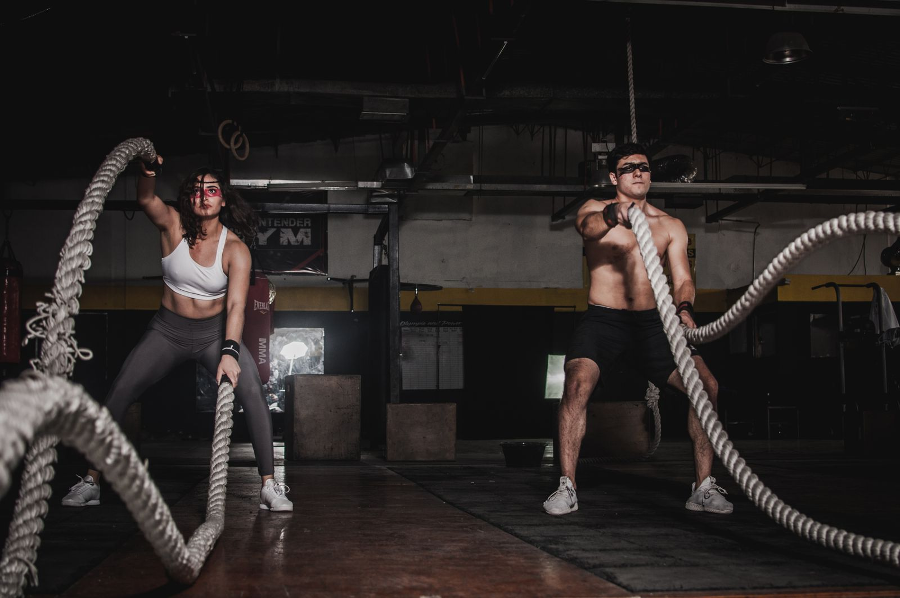

Strength lab
Strength labJules Park
6 years coaching beginner strength groups
Jules breaks a new lift into short practice sets. Expect a demonstration, a turn with a partner, and one specific thing to try next round.
On the floor / Fictional coach profiles
Meet the coaches behind each sample session. Their backgrounds are fictional; the stock photos illustrate their training styles.
Strength lab6 years coaching beginner strength groups
Jules breaks a new lift into short practice sets. Expect a demonstration, a turn with a partner, and one specific thing to try next round.

Engine room4 years leading interval circuits
Remy pairs newcomers for their first circuit and keeps the intervals visible. Nobody has to watch the clock or guess which station is next.
 Groundwork
Groundwork5 years teaching mat-based movement
Tess leads the quieter sessions on the mat. Each drill starts slowly, with time to find a comfortable range before moving on.